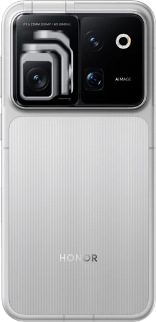

01 / 对话入口OPEN WORLD. SLOW GROWTH.
这只苦力怕，
只会发芽。
外表有点危险，内心只想种田。
Creeper 头里住一盆绿，工位上多一个搭子。
你先下班，我负责发芽。
交互概念 · 不连接硬件OVERWORLD / 工位生存模式
方块搭子 · 今日嘴替
老板的饼我不吃。
我光合作用。
拖动转一圈 3D 准备中
浇水、灯效与心情均为网页模拟，不控制真实设备。
硬件你来选◆对话交给 YOYO◆照顾植物，也留意自己◆没有爆炸，只有发芽
01 / EQUIPMENT INVENTORY
方块是外表。
里面有真家伙。
对话、采集、显示，各就各位。
这是我们使用的硬件，也可以成为你的起点。
产品图来自 HONOR 与 Seeed Studio 官方页面。
打开硬件图鉴与完整链接 →02 / CRAFTING TABLE
亲手接一根线，
认领一位绿同事。
把插头送回它的小窝，听搭子说声“收到”。
认板、接线、验证，一起慢慢来。
嗨，先帮我看看水箱还有多少水～
三维教学准备中 · 接口和文字教程始终可用
先核对 IIC1 分线供电
XIAO ROBOT BOARD布局简化，实际位置认丝印
拖动转一圈 · 点接口认识外设
移动光点表示教学路径，不是实时电流或设备回包。
接口依据与完整分配 ↗03 / SIDE QUEST: TAKE A BREATH
主线任务：
今天好好长。
很忙的一天里，也留一个支线任务：
看看叶子，喝一口水，再决定下一步。
“今天有点蔫。”
不急着给建议。让 YOYO 先听你说完，再一起找一个做得到的小步骤。
Skill 陪伴对话“先一起长五分钟。”
屏幕里的小精灵有自己的节奏。专注、照料、发芽，小小的反馈也值得被看见。
已实现 · 屏幕养成“今天，就到这里。”
收起今天的待办，打印一张工位日签。把这一小段日子，留在纸上。
中文日签 · 已接入04 / CHOOSE YOUR STATUS
今天，你是哪一盆？
选一个状态。它替你说一句。
角色文案是模拟表达，不是传感器判断。
05 / CRAFT YOUR OWN COMPANION
盆可以不一样。
关心，用同一种语言。
从工位上的一株薄荷开始，
把设备能力说清楚，把每一次动作确认清楚。
再去想一座温室，而不是反过来。
说一句话你 + YOYO理解意图 · 解释结果
能力契约RoboPlanter身份 · 能力 · 状态 · 动作边界
本地执行你的硬件设备限时 · 真实回包
已验证读取链路：YOYO Skill → 官方 BLE → XIAO。WS2813 灯带把陪伴延伸到桌面环境；查看灯效与接线教程 ↗。植物按自己的周期生长，搭子陪你看见变化：真实养成设计 ↗ · 地区与作物知识库 ↗。网页只做展示，在线设备管理和农业控制是后续阶段。
01 / 已实现
屏幕植物养成、专注计时、中英文与设置
现有养成为加速游戏，已有实屏记录；真实物候尚未接入。
02 / YOYO 接入
YOYO Skill 与 XIAO 的 BLE 接入
0.4.0加密配对、实时土壤及温湿度读取已通过；手机动作继续验收。
03 / 离线原型
真实观察与地区化作物知识
33 条来源，按作物、地区和阶段组织参考。
04 / 未来生长
自带硬件、温室与智能灌溉
SEN54、环境光、超声波已接入；本机水箱、标定与短时出水已确认；扩展模块持续接入。
翻翻旧存档 早期一体机 · 可旋转 3D 概念 ↗
DESIGN ARCHIVE / 01
早期的一体机，
也留个存档。
这是改用 Creeper 头花盆前的外观探索：手机仓、屏幕与小票口融入同一个机身。
- 01内嵌手机仓
- 02屏幕 × 小票便签
- 03环绕氛围灯带
Tripo AI 外观概念，非实机拍摄。
 一体机 · 3D 外观概念
一体机 · 3D 外观概念
点击后加载 3D · 约 45 MB
先看一眼，再决定要不要转一圈。
今天没有开花，
也没关系。
先从工位上的第一盆开始。
把搭子带上桌开源硬件 · 工位植物伙伴